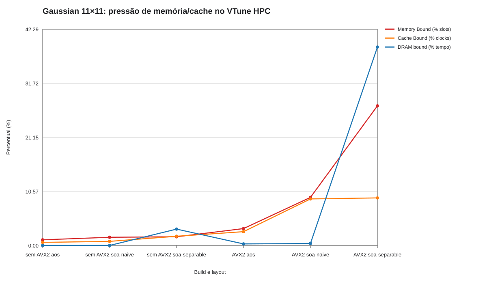
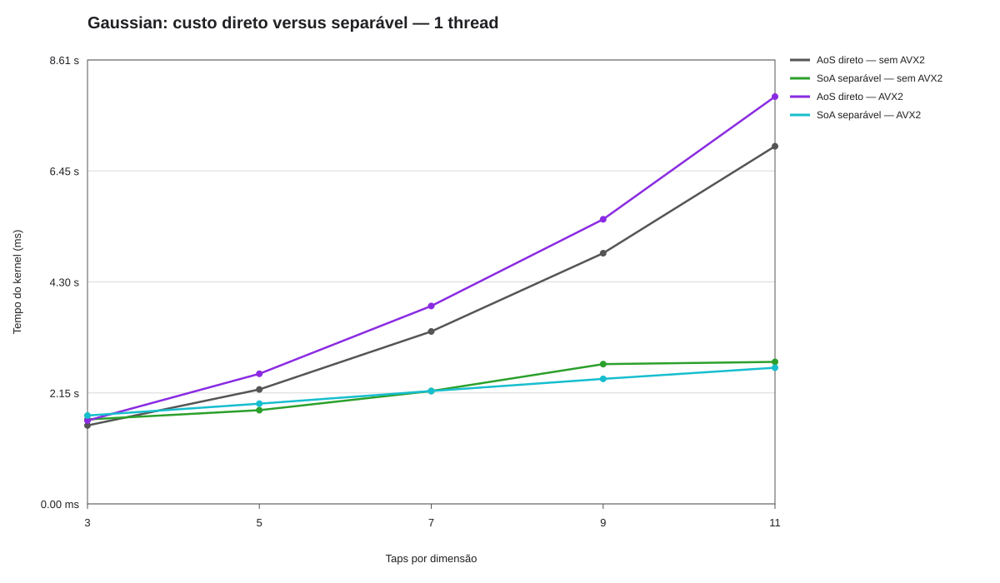
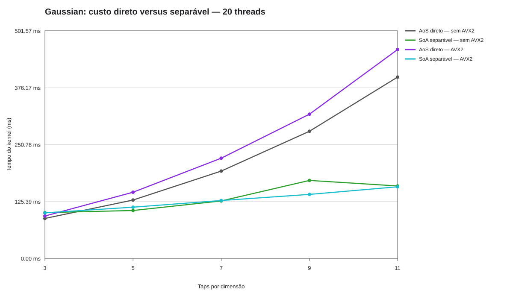
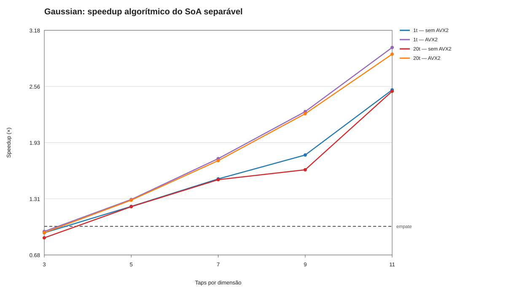
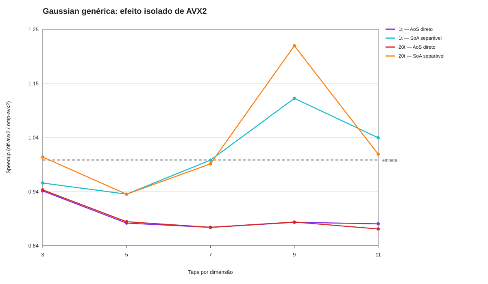
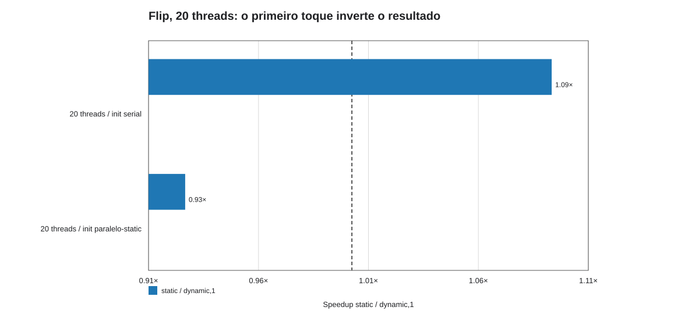
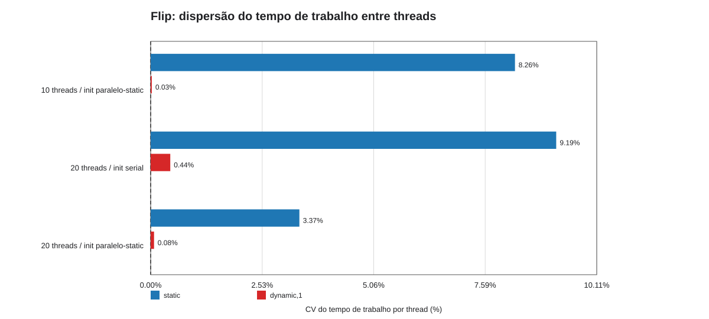
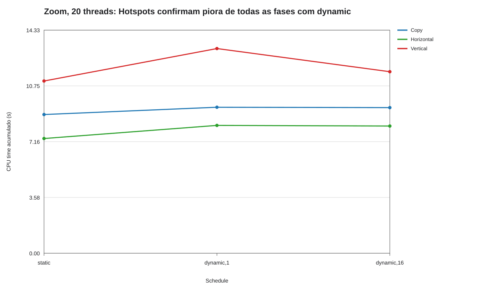

{kind=link}

Gaussian: SoA ingênuo + AVX2 tem pressão de memória/cache maior; o separável fica limitado por DRAM após remover trabalho aritmético.
Esta página cruza cinco campanhas: HPC Performance para os layouts Gaussianos, duas alocações independentes para Flip/topologia, Hotspots para Zoom/schedules e a campanha de cinco repetições para tamanhos Gaussianos. Percentuais HPC são diagnósticos do trecho coletado, não tempos de benchmark. Tempos de Gaussianos são medianas de cinco repetições sem VTune; Flip/topologia tem duas réplicas independentes de uma execução-controlada cada.
No Flip, a mudança de sinal em 20 threads é o dado-chave: com preparação paralela em blocos static, static supera dynamic,1; com preparação serial, o oposto ocorre. Em 10 threads, dynamic permanece mais rápido, logo primeiro toque/topologia explica parte importante, mas não toda, a assimetria observada.

Gaussian: SoA ingênuo + AVX2 tem pressão de memória/cache maior; o separável fica limitado por DRAM após remover trabalho aritmético.

Gaussian 3×3 a 11×11, 1 thread(s): mudança algorítmica e AVX2.

Gaussian 3×3 a 11×11, 20 thread(s): mudança algorítmica e AVX2.

Razão AoS direto / SoA separável: este é ganho algorítmico, não ganho de AVX2. O separável usa 2N, em vez de N², contribuições.

AVX2 isolado dentro do mesmo kernel. Valores próximos de 1× significam que AVX2 quase não alterou o tempo; não confundir com a razão AoS/separável.

Razão de tempos: acima de 1× favorece dynamic,1; abaixo de 1× favorece static. Agora o gráfico evidencia a inversão causada pelo primeiro toque.

Coeficiente de variação do tempo de trabalho por thread, em porcentagem. Valores menores significam término mais uniforme; não representam ganho de velocidade.

Zoom: 50 iterações no Hotspots; dynamic,1 aumenta CPU time nas três fases e o CPI (1,223 versus 1,110 com static).
{kind=link}
{kind=link}
{kind=link}
{kind=link}
{kind=link}
{kind=link}
{kind=link}